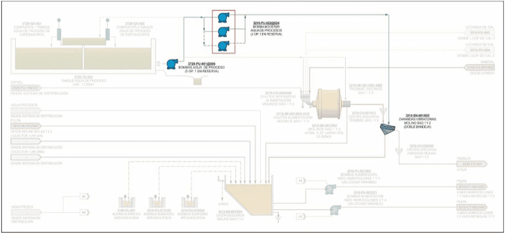
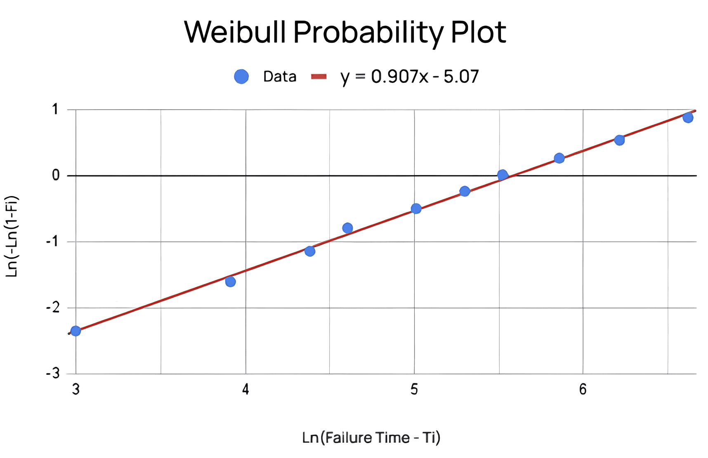

Este ejemplo muestra el análisis completo de Weibull aplicado a datos
reales de fallas de bombas industriales.
Sigue el proceso desde los datos originales hasta la interpretación final de los parámetros β y η para
estrategias de mantenimiento.
Equipo: Bombas booster de agua del proceso
Código: 3210-PU-022@024
Datos disponibles: 10 registros de fallas
Objetivo: Aplicar distribución de Weibull para análisis de confiabilidad

| Rango (i) | Tiempos de falla (Ti) - horas |
|---|---|
| 1 | 20 |
| 2 | 50 |
| 3 | 80 |
| 4 | 100 |
| 5 | 150 |
| 6 | 200 |
| 7 | 250 |
| 8 | 350 |
| 9 | 500 |
| 10 | 750 |
Se utiliza el método de Rangos Medianos: Fi = i / (n + 1) para tabularlos
| Rango (i) | Tiempos de falla (Ti) - horas | Probabilidad estimada (Fi) |
|---|---|---|
| 1 | 20 | 0.091 |
| 2 | 50 | 0.182 |
| 3 | 80 | 0.273 |
| 4 | 100 | 0.364 |
| 5 | 150 | 0.455 |
| 6 | 200 | 0.545 |
| 7 | 250 | 0.636 |
| 8 | 350 | 0.727 |
| 9 | 500 | 0.818 |
| 10 | 750 | 0.909 |
Calculamos las coordenadas (x,y) usando el logaritmo
natural de los tiempos de falla y las
probabilidades de falla:
x = ln(Ti) y y = ln(-ln(1 - Fi))
| Rango (i) | Tiempo de fallas (Ti) - horas | Probabilidad estimada (Fi) | x = ln(Failure Time) | y = ln(-ln(1 - Fi)) |
|---|---|---|---|---|
| 1 | 20 | 0.091 | 2.996 | -2.351 |
| 2 | 50 | 0.182 | 3.912 | -1.606 |
| 3 | 80 | 0.273 | 4.382 | -1.144 |
| 4 | 100 | 0.364 | 4.605 | -0.794 |
| 5 | 150 | 0.455 | 5.010 | -0.501 |
| 6 | 200 | 0.545 | 5.298 | -0.238 |
| 7 | 250 | 0.636 | 5.521 | 0.012 |
| 8 | 350 | 0.727 | 5.857 | 0.262 |
| 9 | 500 | 0.818 | 6.214 | 0.533 |
| 10 | 750 | 0.909 | 6.620 | 0.875 |
En este paso, se grafican los datos (x, y) y se ajusta una línea recta utilizando regresión lineal como se muestra a continuación.

¿Qué significa y = 0.907x - 5.07?
Los parámetros de análisis Weibull ofrecen conocimientos sobre la confiabilidad y las características de falla de las bombas booster: